Physiology
For the brain to initiate movement, it must have information about the environment around a person.
The information is collected through sensory organs the relayed to the relevant parts of the brain
1.
- The frontal lobe uses information gathered by the senses to plan movements
- The specific area involved is the prefrontal cortex and the supplementary motor areas, which are located adjacent and rostral to the primary motor cortex
- Prefrontal cortex coordinates planned movements and once it analyzes information, projects it to the premotor cortex and supplementary motor areas, then on to the primary motor cortex
- Movement of specific areas of the body are due to direct electrical stimulation of the primary motor cortex, which then passes the signals on to the spinal cord and appropriate areas for movement
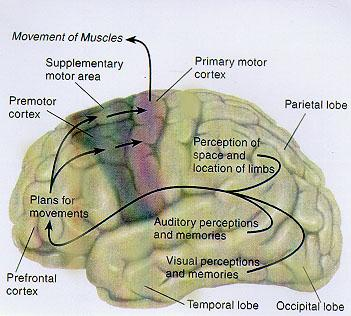
Figure 1: This diagram shows what is discussed above (5, 236)
Cortical-Basal Ganglia Loop1
- Basal ganglia is highly important in movement
- Comprised of the following nuclei:
- Caudate nucleus
- Putamen
- Globus Pallidus
- Inputs from cerebral cortex are received in the basal ganglia and substantia nigra
- Outputs of these areas are the primary motor cortex, supplementary motor area, motor nuclei of the brain stem, and the premotor cortex by way of the thalmus
- Location of nuclei and pathway of movement form a circular loop enabling the basal ganglia to receive information about planned movements and motion performed by the primary motor cortex
- Basal ganglia controls the motor cortex
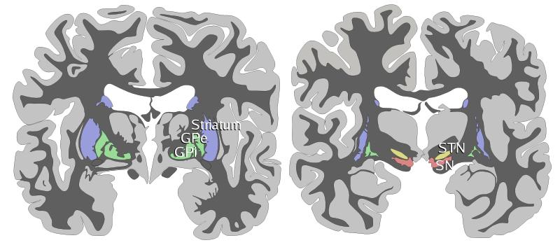
Figure 2: Two schematic drawings of coronal sections of human brain labelling the basal ganglia. Blue=striatum, green=globus pallidus (external and internal segments), yellow=subthalamic nucleus, red=substantia nigra (pars reticulata and pars compacta). The right section is the deeper one, closer to the back of the head. Images taken from wikipedia from the out of copyright Gray's anatomy3.
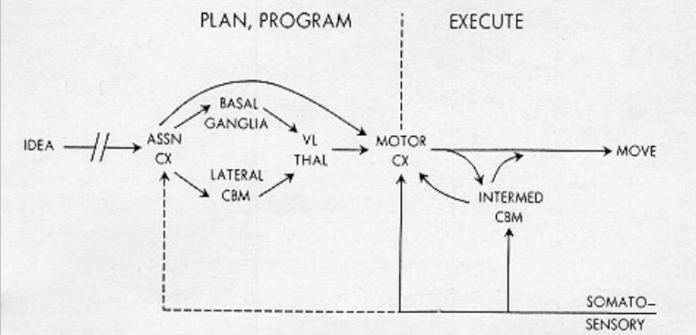
Figure 3: This depicts the flow of information through the basal ganglia as detailed above1.
- Inputs from the primary cortex and primary somatosensory cortex get projected to the putamen
- Signal is the passed on to the caudate followed by the globus pallidis which has the following outputs
- Motor nuclei of the brain stem
- Subthalmic nucleus
- From Globus pallidus, the signal is projected to motor cortex by the ventrolateral thalmus
- Feedback loop is completed when information from primary motor and primary somatosensory cortex are passed on to the putamen
- Loop is maintained by glutamate and GABA
- Substantia nigra sens both excitatory and inhibitory signals to the caudate through the messenger dopamaine, causing innervation of different areas of the putamen via the caudate.
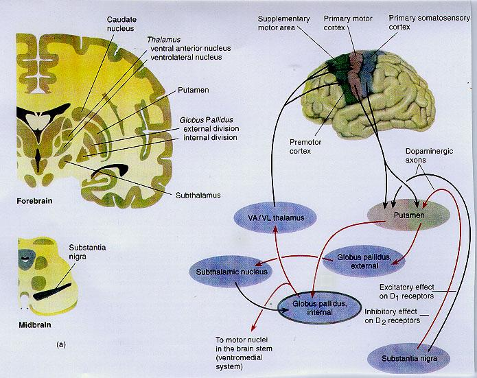
Figure 4: Corto-basal ganglia loop. Red arrows are inhibitory pathways, and black arrows are excitatory connections (5, 244)
Parkinson's Disease
- Occurs in the midbrain region, specifically occurs in the substantia nigra, which is composed of two sections, the pars compacta and pars reticula.
- Substantia Nigra1:
- A small region in the brain stem located just above the spinal cord
- It is a dark section of the brain due to its high concentration of dopaminergic neurons, which have high concentrations of melanin
- Normally appears black
- Parkinson's disease is characterized by the destruction and loss of pigment of the substania nigra (4, 948)
- Primarily responsible for the motor planning, reward seeking, as well as learning
- Pars reticula
- Acts as an output of the basal ganglia complex, relaying processed signals from the basal ganglia to the thalamus and superior colliculus
- The pars reticula is composed of many fast spiking neurons, which have a mean output of over 60 Hz.
- Pars compacta
- Acts largely as an input to the basal ganglia complex
- The dopamine neurons activate in response to some outside stimuli which helps reinforce behavior
- The pars compacta also plays a role in motor function, though indirectly, as lesions to the area are documented to reduce fine motor control.
- Decreasing production of dopamine depresses the pathway, resulting in abnormal behavior resulting in the expression of symptoms associated with Parkinson's2
- In addition, a decrease in the innervation of the caudate is seen, which leads to increased inhibitory behavior by the globus pallidus, ultimately resulting in hyperkinesis
- The excitatory signal from the subthalmic nucleus which innervates the internal globus pallidus decreases, which leads to tremors, rigidity, and other symptoms of Parkinson's
- In summary, a decreased amount of dopamine will cause an inhibitory signal in the motor cortex rather than a typical excitatory one
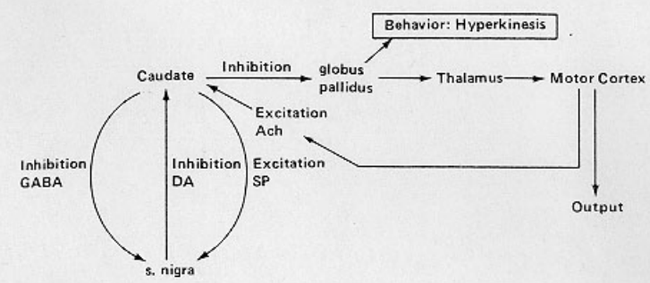
Figure 5: This is an overall schematic of Parkinson's Disease (2, 71)
References
- http://www.macalester.edu/psychology/whathap/UBNRP/parkinsons/anatomy%20&%20physio.html
- Black, Ira B., Information in the Brain: A Molecular Perspective. Cambridge, MA: MIT Press, 1991, pp. 68-72.
- http://upload.wikimedia.org/wikipedia/commons/3/33/Basal-ganglia-coronal-sections-large.png
- Marsden, C. D., "Parkinson's Disease" The Lancet, April 21, 1990, Vol.335, No. 8695; pp. 948-953.
- Carlson, Neil Physiology of Behavior, 6th ed. Needham Heights, MA: Allyn and Bacon, 1998, pp.234-236, 242-245.
Pathophysiology
The symptoms of Parkinson’s disease emerge in correlation with the reduction of dopamine-secreting cells in the pars compacta of the substantia nigra. Specifically, it has been observed that patients lose up to 60-70% of these dopaminergic (DA) neurons in the substantia nigra before clinical symptoms appear, though the mechanism behind DA neuron death is still unknown and debatable. Additionally, 80% of the striatal nerve terminal is asymmetrically lost before Parkinsonism becomes apparent
1. Because of the striatum’s key role in coordinating pathways of movement
2 as well as its role as an input source for sensory signals to other components of the basal ganglia, the reduction of dopaminergic innervations to the striatum may disturb movement-regulating activity in the basal ganglia neural circuit. Two important pathways exist in this neural circuit, namely the direct pathway (which manages voluntary movement) and the indirect pathway (which works complementarily to the direct pathway by preventing undesirable muscle contractions during voluntary movement
3. When dopamine levels fall, an imbalance between dopamine and acetylcholine neurotransmitters can interfere with the patient’s coordination and movement
4. While the direct pathway becomes inhibited from DA neuron loss, the indirect pathway becomes excited, leading to hypokinesia (decreased body movement). Normally, the thalamus would send excitatory signals to the motor cortex. However, the lack of dopamine production will inhibit this signal projection and further exacerbate hypokinesia.
Dopamine travels through the brain via four different pathways. The nigrostriatal pathway is the most noticeably affected. Because it is involved in movement coordination, disruption of this channel easily leads to a number of motor manifestations, primarily the following:
- Resting tremor: usually in the arm or leg; typically occurs in unilateral fashion at onset but may eventually affect both sides of the body
- Muscle rigidity: stiffness in limb movement
- Bradykinesia: slowed movement; can cause what is known as ‘stone face,’ or loss of facial expression; can also cause difficulty in swallowing which consequently may result in aspiration pneumonia
- Postural instability: inability to stand upright; may start causing falls a couple years after diagnosis, leading to head injuries or even bone fractures.
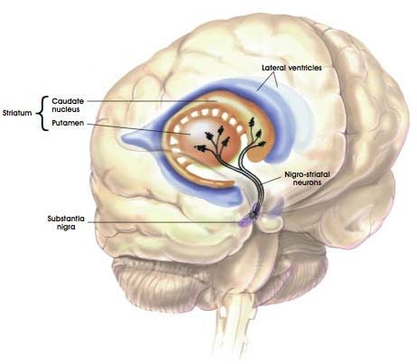
Source5
The above symptoms are the most common as well as the first symptoms commonly experienced among patients. Because Parkinsonism develops so slowly, patients can live for years of normal productivity before diagnosed with PD
6.
Though PD is better recognized by its physical manifestations, the lack of dopamine through the other three pathways – namely, the mesocortical; mesolimbic; and turberoinfundibular pathways – is thought to be associated with cognitive manifestations of Parkinson’s. 25-33% of PD patients have the cardinal non-motor sign of dementia (usually a mild form); while 25-33% have mild cognitive impairment (MCI), a less severe loss of intellectual ability. Parkinson’s patients may even experience a combination of depression, apathy, and/or anxiety. Hallucinations and delusions may occur in 4% of PD patients
7. Besides those already listed, some less distinguished symptoms may include oily skin, erectile dysfunction, constipation, shortness of breath, increased sweating, insomnia, and difficulty urinating
8.
Research suggests the ubiquitin proteasome system (UPS) impairment is connected to Parkinson’s. More specifically, a protein by the name of alpha-synuclein becomes attached to ubiquitin in the damaged neurons. The cells’ proteosomes, which typically break down unwanted proteins, is unable to denature this complex due to a mechanism not yet fully understood. These unwanted, misfolded alpha-synuclein proteins begin to unnaturally accumulate within the cell, which may lead to neuron degeneration or inflammation and an aggregation of cytoplasmic inclusions called Lewy Bodies.
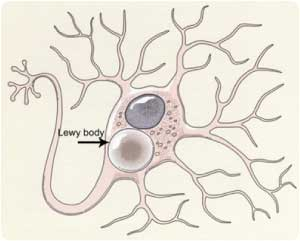
Source9
Such Lewy bodies have been noted to accumulate in the substantia nigra and well beyond – usually starting from the brain stem to the limbic system and eventually to the neocortex which is responsible for complex cognitive functions
10. Neuritis resulting from the Lewy bodies would contribute to decreased dopamine levels, cell death, and theoretically lead to Parkinson’s
11. Along with such alpha-synuclein protein accumulation and Lewy bodies, researchers have observed excessive amounts of iron in the dopaminergic cells. The iron, a toxin to neurons, binds to neuromelanin inside the nerve cells of the substantia nigra. Therefore, it is possible that neuromelanin serves to defend the cells from damage. The iron even promotes further synuclein aggregation through oxidation reactions to advance the probability of cell death
12.
References
- Sujith O.K., Lane C. Theraputic Options for Continuous Dopaminergic Stimulation in Parkinson’s Disease. Ther Adv Neurol Disord. 2009 March; 2(2): 105–113.
- Wisegeek. What Is the Striatum? http://www.wisegeek.com/what-is-the-striatum.htm (accessed Oct 27, 2012).
- Nambu A. A new dynamic model of the cortico-basal ganglia loop. Prog Brain Res. 2004; 143: 461-466.
- CNS Degenerative Diseases. Parkinson Disease. http://library.med.utah.edu/WebPath/TUTORIAL/CNS/CNSDG.html (accessed Oct 27, 2012).
- Nigrostriatal pathway. (n.d.) Retrieved from http://trialx.com/curetalk/wp-content/blogs.dir/7/files/2011/05/diseases/Lewy_Body_Disease-2.jpg .
- UCSF Medical Center. Parkinson’s Disease: Signs and Symptoms. http://www.ucsfhealth.org/conditions/parkinsons_disease/signs_and_symptoms.html (accessed Oct 27, 2012).
- McNamara P. About. Postural Instability. . (http://parkinsons.about.com/od/glossary/g/postural_instability.htm). 2009 April.
- Friedman J. Parkinson’s disease psychosis 2010: A review article. Parkinsonism & Related Disorders. 2010 November; 16(9): 553-560.
- Lewy body. (n.d.) Retrieved from http://www.elements4health.com/images/stories/lewy-body.jpg .
- Movement Disorder Virtual University. Parkinson’s Disease: Pathology. http://www.mdvu.org/library/disease/pd/par_path.asp).
- Graduate student. Oxbridge Writers. Ubiquitin proteasome system in Parkinson’s disease. Sciences.
- Parkinson’s Disease Pathophysiology. News Medical. http://www.news-medical.net/health/Parkinsons-Disease-Pathophysiology.aspx (accessed Nov 27, 2012).
Treatment, Care, Medication
There are still no close signs of cure for Parkinson’s disease. However, symptoms can still be treated and reduced through several methods.
The approach to treatment will vary with each individual and with the different stages of PD.
Whereas exercise and physical therapy are options helpful at any stage and for generally anyone,
doctors may plan to wait until the symptoms begin to interfere with one’s usual daily activities to prescribe any specific drugs.
Side effects such as nausea, fatigue, or sleepiness for such drugs must be noted, however; and pre-consultation with one’s doctor is advised.
1
Source4
Drugs
- Anticholinergics (like benztropine or trihexyphenidyl): helps maintain the brain’s balance between dopamine and acetylcholine by inhibiting the actions of acetylcholine. They also block nerve impulses that pertain to motor control. Anticholinergics are used more by younger patients and have been observed to control tremor well.
- MAO-B inhibitors (like rasagiline or selegiline): short for monoamine oxidase inhibitors. They prolong the span of dopamine’s effects in the brain before it is broken down. It is possible that these inhibitors also facilitate the dopamine release from neurons.
- Amantadine: helps to reduce dyskinesia, though the mechanism by which it works is unclear. It is possible that the medicine increases the amount of dopamine in the brain while simultaneously inhibiting acetylcholine reception in order to maintain proper motor control.
- Dopamine agonists: stimulate dopamine receptors in the brain by behaving like dopamine; help reduce PD’s motor function symptoms such as stiffness or slowness
- Levodopa (L-Dopa): most commonly used drug for PD due to its efficacy and relatively reduced side effects compared to other drugs. L-Dopa converts to dopamine in the brain and works best as a counter to rigidity and hypokinesia. Carbidopa is a medicine that, when taken alongside L-Dopa, will prevent the latter from converting itself outside the brain. L-Dopa’s main unwanted traits include psychiatric effects such as confusion; nausea; anxiety; hallucinations; and sleepiness and (to a lesser extent) physical effects such as dyskinesia; low blood pressure; breathing difficulty; and gastrointestinal disturbances. However, doctors have noticed reduced efficacy and a rise in such effects after five years of use – namely, bradykinesia, tremor, and muscle spasms. Therefore, it may not be uncommon for doctors to couple the prescription of L-Dopa with dopamine agonists like pramipexole or ropinirole, which serve to delay the need for the use of L-Dopa. Additionally, a liquid form is available that may reduce fluctuations in L-Dopa’s effects. It must be noted that one’s diet may need to change because the drug may be less effective when taken simultaneously with protein. [1][2]
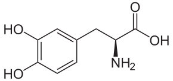
Chemical structure of L-Dopa3
Surgery
Surgery is another option that may reduce symptoms, though it in no way cures Parkinson’s or stops the need for drugs. Operations may be considered when drugs greatly reduce in effectiveness. Currently there are a few options available. Pallidotomy is the destruction of a small region of the globus pallidus (which may serve as an origin for some symptoms) of the brain via a very cold probe that scars the tissue. Similarly, a thalamotomy can be executed to destroy areas of the thalamus that may be causing the symptoms. The most popular surgical method for treating advanced Parkinson’s disease is deep brain stimulation in which electrical impulses are used to stimulate the thalamus and reducing tremor (for more information on the deep brain stimulation, please proceed to the Recent Developments tab)
1.
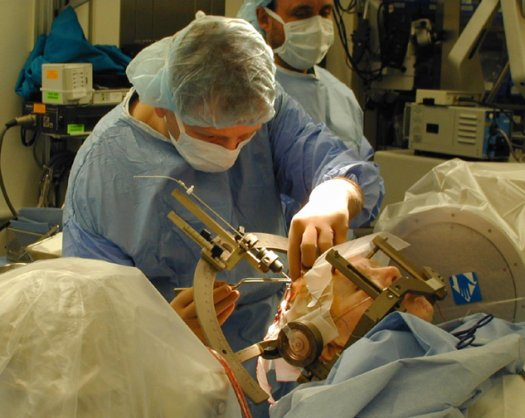
Deep brain stimulation on a Parkinson’s patient5
References
- WebMD. Parkinson’s Disease Health Center. http://www.webmd.com/parkinsons-disease/guide/parkinsons-treatment-care (accessed Nov 27, 2012).
- New York Times. Parkinson’s Disease. http://health.nytimes.com/health/guides/disease/parkinsons-disease/levadopa-%28l-dopa%29.html (accessed Nov 27, 2012).
- Chemical structure of L-Dopa. (n.d.) Retrieved from
Wikipedia
- Drugs. (n.d.) Retrieved from http://www.viartis.net/parkinsons.disease/images/Drugs.jpg.
- Deep brain stimulation. (n.d.) Retrieved from http://www.popsci.com/files/imagecache/article_image_large/articles/deep%20brain%20stimulation.jpg.
Recent Developments
Genome Wide Association Studies
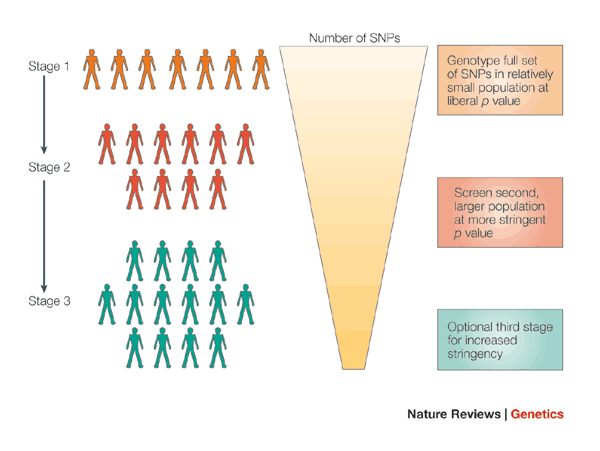
Source1
Genome wide association studies are being done to determine which genomic factors are statistically related to the disease.
These studies look for genotypes that have a much higher frequency in people with Parkinson's disease than in people without Parkinson's disease. Such genotype factors are considered risk factors. This information is useful in understanding the mechanisms of the disease and may be useful in designing future clinical treatments.
Other diseases, particularly monogenic disesases, have a very clear link between genotype and disease.
Diseases like Parkinson's Disease (PD) have a much more complex relationship.
Even mutations that have a strong correlation with Parkinson's disease are frequently present in individuals who do not develop PD
3.
One team has confirmed existing risk loci and identified two new risk loci
4. Their results also provide evidence for the genetic heterogeneity of the disease.
Advances in Surgical Brain Stimulation
In the past, ablation of portions of the thalamus was used to treat cases of advanced PD.
Today, surgical brain stimulation techniques have almost completely replaced that process.
The brain stimulation techniques replicate the symptom improvement benefits of ablation with a more tunable and reversible process.
Today, surgical brain stimulation of the subthalamic nucleus is commonly done. This is shown to reduce the same types of symptoms addressed by dopaminergic drugs such as L-DOPA.
Other symptoms of PD, such as midline symptoms, dysautonomic symptoms, and gait disturbance are not significantly improved.
Research is ongoing into stimulation of other areas of the brain, including cortical stimulation
of the motor areas, with the hopes of treating these other symptoms.
5
Modeling Disease with cultured dopaminergic neurons from patient derived induced pluripotent stem cells
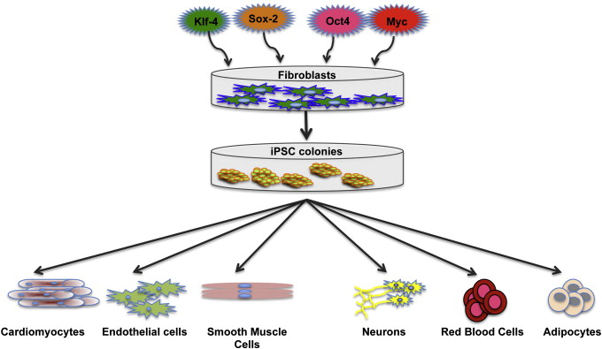
Source2
A suspected primary cause of Parkinson's disease is death of dopaminergic neurons in the substantia nigra deep in the mesencephalon. This area of the brain is not surgically accessible in living patients, so it is difficult to study these cells or test treatments directly against this tissue. One of the promising areas of research involves recreating these dopaminergic neurons in vivo so that they can be studied, and new drugs and treatments and be directly tested. This can be done by taking fibroblast cells from Parkinson's patients, converting them to induced pluripotent stem cells (iPSCs) and then differentiating them into dopaminergic neurons.
Unfortunately, creating iPSCs typically relies on viral transduction of four transcription factors. These viral factors provide the desired induced pluripotency but cause unwanted side effects. They cause an increased probability of tumors and they they cause a different gene expression profile from true embryonic stem cells. Recent research demonstrates improved techniques using Cre-recombinase excisable viruses for developing the iPSCs without the viral reprogramming factors
6. This eliminates some of the increased tumor probability and provides a more true embryonic gene expression profile.
Other Promising Techniques5
- Neural Grafts: Grafting neurons into the brain. Additionally, stem cell derived neurons resolves immunological issues but potentially introduces oncological issues. This is a very promising technique but it is still in the early stages of patient trials.
- Improved drugs: Currently, levodopa is the primary drug used to reduce most of the symptoms of Parkinson's Disease. Unfortunately, levodopa has the side effect of dyskinesia. New drugs are in development that reduce PD symptoms without the dyskinesia side effect.
- Dopamine agonist infusion therapy: Administration of dopamine agonists via duodeno-gastrostomy has been shown to reduce PD symptoms without dysinesia side effects of levodopa.
References
- Image for Genome Wide Association Studies. http://www.nature.com/nrg/journal/v6/n2/fig_tab/nrg1521_F2.html
- Image for induced pluripotent stem cells. http://ars.els-cdn.com/content/image/1-s2.0-S0169409X1100041X-gr1.jpg
- Nalls M, Plagnol V, Hernandez D, et al. Imputation of sequence variants for identification of genetic
risks for Parkinson’s disease: a meta-analysis of genome-wide association studies. Lancet 2011;377:641.
- Satake W, Nakabayashi Y, Mizuta I, et al. Genome-wide association study identifies common variants
at four loci as genetic risk factors for Parkinson’s disease. Nature genetics 2009;41:1303–1307.
- Benabid A, Chabardes S, Mitrofanis J, and Pollak P. Deep brain stimulation of the subthalamic nucleus
for the treatment of Parkinson’s disease. The Lancet Neurology 2009;8:67–81.
- Soldner F, Hockemeyer D, Beard C, et al. Parkinson’s disease patient-derived induced pluripotent stem
cells free of viral reprogramming factors. Cell 2009;136:964–977.
{kind=link}
{kind=link}
{kind=link}
{kind=link}
{kind=link}
{kind=link}
{kind=link}